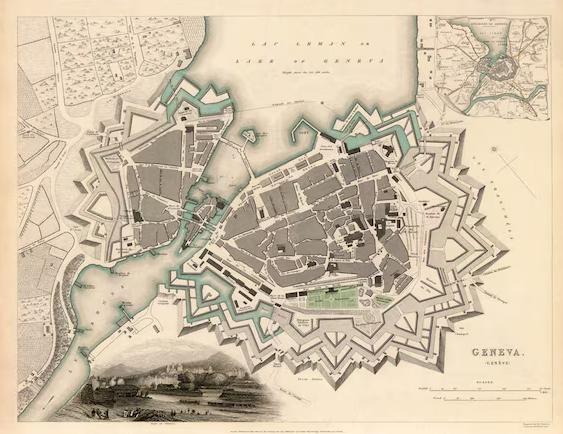

Biografia de Rousseau
História de Rousseau
"Jean-Jacques Rousseau não é francês, como muitos pensam. Ele é suíço, nascido na cidade de Genebra, em 28 de junho de 1712. Sua mãe, Suzanne Bernard, morreu com o filho ainda pequeno. Ela deixou para Rousseau uma vasta biblioteca, que foi usada por Isaac, seu pai, para fornecer a primeira educação do menino. Isaac educou seu filho por meio da biblioteca de Suzanne até que o menino completasse sete anos de idade. Além dessa biblioteca, eles leram a biblioteca herdada do avô materno de Rousseau.
"Seu pai teve um problema, envolvendo-se em uma briga com um oficial da lei. Ele não conseguiu provar sua inocência, cumpriu pena e exilou-se de Genebra. Rousseau nunca mais o viu, ficando aos cuidados do tio materno, Bernard. Seu tio o enviou para a França a fim de estudar com o pastor Lambercier.
"O futuro filósofo retornou para Genebra em 1724. Seu tio o colocou para ser aprendiz de vários ofícios, como mensageiro e gravador de metais, mas Rousseau não os levou a sério. Ele gostava mesmo de fazer suas leituras, estudar, escrever e ter contato com a natureza por meio de seus passeios em bosques, algo que ele aprendeu com Lambercier.
Mapa antigo sobre do local de nascimento de Rousseau:
Video sobre Vida e a Obra de Rousseau: